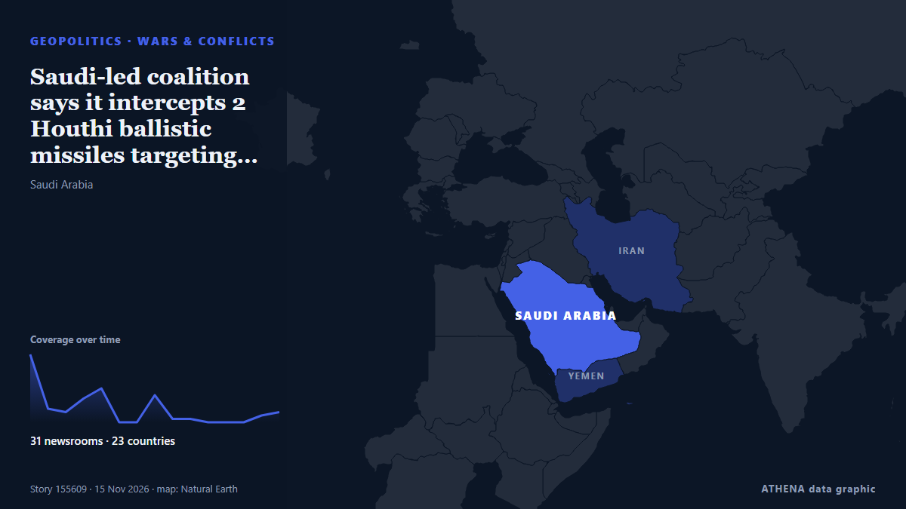

ATHENA Glaux Intelligence — Παγκόσμια ειδησεογραφική ανάλυση — κάθε αριθμός εξηγημένος
Κάθε είδηση, ελεγμένη σε πολλές χώρες.
Το ATHENA Glaux παρακολουθεί 629 ειδησεογραφικά μέσα σε όλο τον κόσμο. Μια είδηση γίνεται επαληθευμένο γεγονός μόνο όταν την αναφέρουν ανεξάρτητα μέσα. Κάθε γεγονός δείχνει ποιος το ανέφερε πρώτος και έναν βαθμό κινδύνου με τους λόγους του.
Αναφορές έρχονται από ανεξάρτητα μέσα — όταν δύο συναντηθούν στην ίδια ιστορία, γίνεται επιβεβαιωμένο γεγονός.
Τρεις τρόποι να διαβάσετε σήμερα
Ξεκινήστε από αυτόν που ταιριάζει στον χρόνο σαςΕπαληθευμένα γεγονότα
Κατά σειρά έκτασης της κάλυψης
- Israel: Party chiefs say Netanyahu's election fraud claims a coup attempt159 μέσα · 56 χώρεςΚίνδυνος 4.7
- Trump on ’60 Minutes’ Reflects on Midterm Loss, Death and Forgiveness: ‘I Do Hate Some of My Enemies’106 μέσα · 43 χώρεςΚίνδυνος 6.7
- Κίνδυνος 3.9
- From ‘The Batman’ to James Bond: Robert Pattinson Becomes the New 00771 μέσα · 31 χώρεςΚίνδυνος 3.2
- Oil tanker on fire after hitting mine in Strait of Hormuz52 μέσα · 30 χώρεςΚίνδυνος 3.0
Γραφείο Ανάλυσης
Κάντε μια ερώτηση και διαβάστε τεκμηριωμένη αξιολόγηση μιας βασικής είδησης, μαζί με το τι θα την διέψευδε.
Ανοίξτε το Γραφείο Ανάλυσης ›Πώς ελέγχει το ATHENA μια είδηση
- ΣυλλογήΟι αναφορές φτάνουν από ανεξάρτητα μέσα σε πολλές χώρες.
- ΑντιστοίχισηΌταν δύο μέσα συναντιούνται στην ίδια είδηση, γίνεται επαληθευμένο γεγονός.
- ΕξήγησηΚάθε γεγονός δείχνει ποιος ήταν πρώτος, πόσο εξαπλώθηκε και γιατί ο κίνδυνος είναι αυτός.

ΓεωπολιτικήSaudi-led coalition says it intercepts 2 Houthi ballistic missiles targeting Riyadh
The Saudi-led coalition said early Sunday that its air defenses intercepted and destroyed two ballistic missiles launched by Yemen’s Houthis toward Riyadh, the Saudi capital. από Daily Mirror
Οι τίτλοι των ειδήσεων παρουσιάζονται στα αγγλικά, όπως δημοσιεύτηκαν.
‘Orange Order could grow in a united Ireland’: Varadkar
Opposition parties had piled on pressure for the Government to make preparations for a debate on a united Ireland. από The Irish News (Belfast)
3 men sentenced to death over Jordan church attack
The gunmen killed nine people and wounded 25 others when they stormed a funeral at a Greek Orthodox church in southern Hammoud village, Karak governorate, on Oct 23. από Free Malaysia Today

Iran targets US military base in Bahrain with drone attack
It marks the second attack on the country in three days and comes as the US and Iran remain locked in a stand-off over the Strait of Hormuz. από BBC News
2 oil supertankers catch fire after explosions in Strait of Hormuz: Iran
Why is Iran attacking tankers during peace talks? από Gulf News
Binance Aims to Reopen Withdrawals After $6.3 Billion Hack
Binance says activity is returning to normal for the cryptocurrency platform following last month’s historic heist. από PYMNTS
Γεωπολιτική, Πολιτική & Ασφάλεια
Περισσότερα ›Le Pen says France will keep giving Ukraine aid if she is elected
PARIS, Nov 16 - French far-right leader Marine Le Pen said on Monday that France would continue to give Ukraine material and humanitarian assistance if she is elected president next spring. από The Straits Times
- Πόλεμοι & συγκρούσεις
3rd US aircraft carrier arrives in Middle East amid Iran tensions
- Εκλογές & πολιτική
‘Emperor’s New Clothes’: Burnham breaks 10-year taboo on Brexit
- Διπλωματία & σύνοδοι
Trump says he might meet with North Korea's Kim Jong Un in China
- Πόλεμοι & συγκρούσεις
After Yemen setback, Saudi Arabia replaces military commander
Οικονομία, Χρηματοοικονομικά & Αγορές
Περισσότερα ›Palestinian woman killed, 10 wounded in settler gunfire, official TV says
Palestinian official television said on Tuesday that a Palestinian woman was killed and 10 others wounded by what it described as gunfire from Israeli settlers in the village of Duyuk Al-Tahta, west… από Arab News
- Μετοχές, ομόλογα & αγορές
Anthropic's record IPO faces some big questions
- Απασχόληση & μισθοί
Milburn calls for ‘complete system reset’ to tackle youth unemployment
- Τράπεζες & πίστη
Paraguayan judge orders former President Pena moved to military prison
- Πληθωρισμός & επιτόκια
US dollar hits 19-month high on Fed rate hike bets
Εμπόριο, Βιομηχανία & Υποδομές
Περισσότερα ›Malaysia proposes new funding sources for Asean haze mitigation efforts
KUALA LUMPUR, Nov 17 — Malaysia has proposed that the potential involvement of the agriculture, insurance sectors... από Malay Mail
- Ναυτιλία & λιμάνια
Third violating oil tanker explodes in Hormuz in 24 hours: Iran’s Navy
- Αερομεταφορές, σιδηρόδρομος & οδικές
US airports slowly return to normal after three days of disruption
- Αερομεταφορές, σιδηρόδρομος & οδικές
United Airlines says ‘widespread’ system outage resolved
- Ναυτιλία & λιμάνια
Port of Gothenburg eyes large-scale biogas bunkering in 2027
Ενέργεια, Πόροι & Περιβάλλον
Περισσότερα ›Nepal flood victims' families may wait up to a year for death certificates
KUALA LUMPUR: Families of Malaysians missing in the Nepal floods could face another three to 12 months, or longer, to obtain certificates of presumption of death, Malaysia Solidarity Families in Hope… από New Straits Times
- Κλίμα & κλιματική πολιτική
UN climate chief warns of AI 'double-edged sword' at COP31
- Ηλεκτρική ενέργεια
ASEAN signs power grid MoU and discusses regional oil stockpiling
- Κλίμα & κλιματική πολιτική
Nepal’s push for mountain climate action features in COP31 draft decision
- Κλίμα & κλιματική πολιτική
Travlos criticises EU stance on shipping decarbonisation talks, warns of fresh IMO deadlock
Τεχνολογία, ΤΝ & Κυβερνοασφάλεια
Περισσότερα ›Top scorer of tax accountant exam apologizes for cheating before police questioning
SEOUL, Nov. 17 (Yonhap) -- The top scorer of this year's certified tax accountan... από Yonhap (English)
- Επεξεργαστές & υπολογιστική
Trump's "Beautiful Woman From China" Remark As He Backs Jensen Huang's Nvidia Return
- Τεχνητή νοημοσύνη
Ruling party leader says will push for 10-year exam ban for AI-assisted cheating
- Τεχνητή νοημοσύνη
California sues OpenAI over the rogue AI agents that hacked Hugging Face
- Επεξεργαστές & υπολογιστική
US to curb China’s access to AI chips as Trump heads to Asia
Επιχειρήσεις, Εταιρείες & Επενδύσεις
Περισσότερα ›- Κλάδοι & εταιρικοί κίνδυνοι
Frictionless ASEAN trade seen boosting growth
- Πτωχεύσεις & αναδιαρθρώσεις
Trump administration targets further limits on skilled foreign workers
- Συγχωνεύσεις & εξαγορές
NGX Group acquires 10% stake in Nairobi securities exchange
- Εταιρική στρατηγική
Kosovo demands EU explanation over Serbian nationalist song at Brussels forum
Η σημερινή εικόνα
| 06:00 | 384 |
|---|---|
| 07:00 | 813 |
| 08:00 | 735 |
| 09:00 | 339 |
| 10:00 | 305 |
| 11:00 | 419 |
| 12:00 | 417 |
| 13:00 | 694 |
| 14:00 | 575 |
| 15:00 | 493 |
| 16:00 | 722 |
| 17:00 | 469 |
| 18:00 | 448 |
| 19:00 | 723 |
| 20:00 | 570 |
| 21:00 | 454 |
| 22:00 | 375 |
| 23:00 | 385 |
| 00:00 | 254 |
| 01:00 | 421 |
| 02:00 | 248 |
| 03:00 | 304 |
| 04:00 | 464 |
| 05:00 | 507 |
Κίνδυνος των σημερινών γεγονότων
Αναδυόμενα σήματα
- Απότομη αύξηση · Ενεργό τώραFive EU
- Νέο όνομα στις ειδήσεις · Ενεργό τώραCyclone Akvan
- Απότομη αύξηση · Ενεργό τώραJericho
- Απότομη αύξηση · Ενεργό τώραEconomic Cooperation Organisation
- Απότομη αύξηση · Ενεργό τώραUnited Airlines
Μείνετε ενημερωμένοι
ATHENA Weekly Risk Picture
Οι μεγαλύτεροι γεωπολιτικοί, οικονομικοί και ναυτιλιακοί κίνδυνοι της εβδομάδας, διασταυρωμένοι και βαθμολογημένοι.
Κάθε Παρασκευή στις 08:00 ώρα Ελλάδας · δωρεάν · στα αγγλικά
Δωρεάν εγγραφήΤο ATHENA στο Telegram
Οι ειδήσεις τη στιγμή που δημοσιεύονται: έκτακτα γεγονότα με κίνδυνο 6 ή περισσότερο, ωριαία σύνοψη, ενημερώσεις κινδύνου και η ημερήσια ενημέρωση στις 10:00.
Δωρεάν · αναρτήσεις στα αγγλικά · αποχωρείτε όποτε θέλετε
Είσοδος στο κανάλιΤην εγγραφή τη διαχειρίζεται η beehiiv με διπλή επιβεβαίωση: τίποτα από όσα πληκτρολογείτε δεν αποστέλλεται στο ATHENA, και κάθε τεύχος έχει σύνδεσμο διαγραφής.
Παρακολούθηση κινδύνων
Περισσότερα ›Παγκόσμιοι κίνδυνοι — εβδομάδα 47, 2026 (16–22 Νοε) ›